## **cpu scheduling** ## **operating systems** ### csci 3411 ### Prof. **Sibin Mohan** <br> _<font size="5"> acknowledgments: some content modified from Silberschatz et al. and West</font>_ --- so far we've seen... --- | concept | role | | --- | --- | | **processes**, **threads** | things that **run** | --- | concept | role | | --- | --- | | **processes**, **threads** | things that **run** | | <scb>swtch()</scb> | **how** to switch between them | --- | concept | role | | --- | --- | | **processes**, **threads** | things that **run** | | <scb>swtch()</scb> | **how** to switch between them | | <scb>sleep()</scb>/<scb>wakeup()</scb>, locks | threads **block** <br> become **runnable** | || --- today → **who** runs next? --- ## dispatching --- | component | role | |---|---| | **scheduler** | decides **which** thread runs next | --- | component | role | |---|---| | **scheduler** | decides **which** thread runs next | | **dispatcher** | **switches** to that thread | || --- ### dispatcher | **steps** | step | what | |---|---| | 1. save/restore | **register** contents | --- ### dispatcher | **steps** | step | what | |---|---| | 1. save/restore | **register** contents | | 2. switch | **virtual address space** <br> [only if threads in different processes] | --- ### dispatcher | **steps** | step | what | |---|---| | 1. save/restore | **register** contents | | 2. switch | **virtual address space** <br> [only if threads in different processes] | | 3. resume | execution <br> [_e.g._ return to user-space] | || --- ### dispatcher | **steps** | step | what | |---|---| | 1. save/restore | **register** contents | | 2. switch | **virtual address space** <br> [only if threads in different processes] | | 3. resume | execution <br> [_e.g._ return to user-space] | <br> these overheads → **<span style="background-color: darkred; color: white;"> dispatch latency </span>** --- ## scheduling --- choosing **order of access** to a resource... --- choosing **order of access** to a resource... ...by a number of principals/requests --- ### scheduling | **a CPU** - **runqueue** → threads that are **runnable** --- ### scheduling | **a CPU** - **runqueue** → threads that are **runnable** - select **one** to execute next --- ### scheduling | **a CPU** - **runqueue** → threads that are **runnable** - select **one** to execute next - <scb>N</scb> cores → choose up to <scb>N</scb> threads --- ### scheduling | **a CPU** - **runqueue** → threads that are **runnable** - select **one** to execute next - <scb>N</scb> cores → choose up to <scb>N</scb> threads <br> [processes vs threads → used interchangeably today] --- how do we choose **next** thread to run? --- ### scheduler | **just a function** --- ### scheduler | **just a function** scheduling done by **scheduler**... --- ### scheduler | **just a function** scheduling done by **scheduler**... ...which is just a function → <scb>sched()</scb> --- ### scheduler | **just a function** kernel needs a **decision**? --- ### scheduler | **just a function** kernel needs a **decision**? calls <scb>sched()</scb> --- let's look at <scb>xv6</scb> | thread **gives up** CPU [<scb>proc.c</scb>] --- ### <scb>xv6</scb> | <scb>yield()</scb> ```C // Give up the CPU for one scheduling round. void yield(void) { acquire(&ptable.lock); //DOC: yieldlock myproc()->state = RUNNABLE; sched(); release(&ptable.lock); } ``` --- ### <scb>xv6</scb> | <scb>yield()</scb> ```C [5|6|7|8] // Give up the CPU for one scheduling round. void yield(void) { acquire(&ptable.lock); //DOC: yieldlock myproc()->state = RUNNABLE; sched(); release(&ptable.lock); } ``` --- ### <scb>xv6</scb> | <scb>yield()</scb> ```C // Give up the CPU for one scheduling round. void yield(void) { acquire(&ptable.lock); //DOC: yieldlock myproc()->state = RUNNABLE; sched(); release(&ptable.lock); } ``` --- who calls <scb>yield()</scb>? [<scb>trap.c</scb>] --- ### <scb>xv6</scb> | **timer interrupt** ```C // Force process to give up CPU on clock tick. // If interrupts were on while locks held, would need to check nlock. if(myproc() && myproc()->state == RUNNING && tf->trapno == T_IRQ0+IRQ_TIMER) yield(); ``` --- ### <scb>xv6</scb> | **timer interrupt** ```C [3-4|5] // Force process to give up CPU on clock tick. // If interrupts were on while locks held, would need to check nlock. if(myproc() && myproc()->state == RUNNING && tf->trapno == T_IRQ0+IRQ_TIMER) yield(); ``` --- ### <scb>xv6</scb> | **timer interrupt** ```C // Force process to give up CPU on clock tick. // If interrupts were on while locks held, would need to check nlock. if(myproc() && myproc()->state == RUNNING && tf->trapno == T_IRQ0+IRQ_TIMER) yield(); ``` --- and when a thread **blocks**? [<scb>proc.c</scb>] --- ### <scb>xv6</scb> | <scb>sleep()</scb> ```C void sleep(void *chan, struct spinlock *lk) { ... // Go to sleep. p->chan = chan; p->state = SLEEPING; sched(); // Tidy up. p->chan = 0; ... } ``` --- ### <scb>xv6</scb> | <scb>sleep()</scb> ```C [6-7|9|12] void sleep(void *chan, struct spinlock *lk) { ... // Go to sleep. p->chan = chan; p->state = SLEEPING; sched(); // Tidy up. p->chan = 0; ... } ``` --- ### <scb>xv6</scb> | <scb>sleep()</scb> ```C void sleep(void *chan, struct spinlock *lk) { ... // Go to sleep. p->chan = chan; p->state = SLEEPING; sched(); // Tidy up. p->chan = 0; ... } ``` --- ### scheduler | **call sites** | event | path | new state | |---|---|---| | **block** | <scb>sleep()</scb> → <scb>sched()</scb> | <scb>SLEEPING</scb> | --- ### scheduler | **call sites** | event | path | new state | |---|---|---| | **block** | <scb>sleep()</scb> → <scb>sched()</scb> | <scb>SLEEPING</scb> | | **timer interrupt** | <scb>trap()</scb> → <scb>yield()</scb> → <scb>sched()</scb> | <scb>RUNNABLE</scb> | || --- ### scheduler | **in <scb>xv6</scb>** - <scb>sched()</scb> → switches to per-core **scheduler context** --- ### scheduler | **in <scb>xv6</scb>** - <scb>sched()</scb> → switches to per-core **scheduler context** - <scb>scheduler()</scb> → picks next process [not typical!] --- ### scheduling | **when?** --- when does kernel need to **make a decision**? --- ### scheduling | **when?** <p>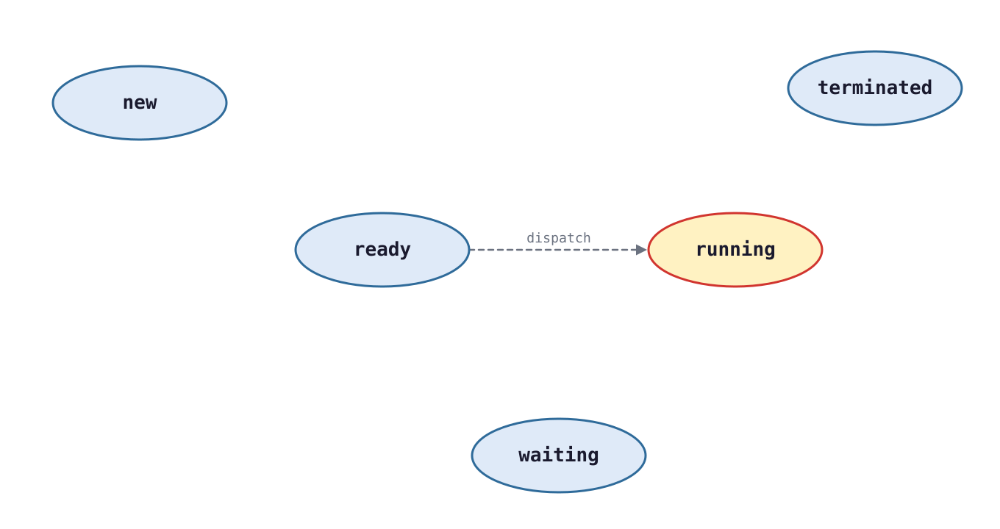</p> --- ### scheduling | **when?** 1. thread **created** → put in <scb>ready</scb> state <p>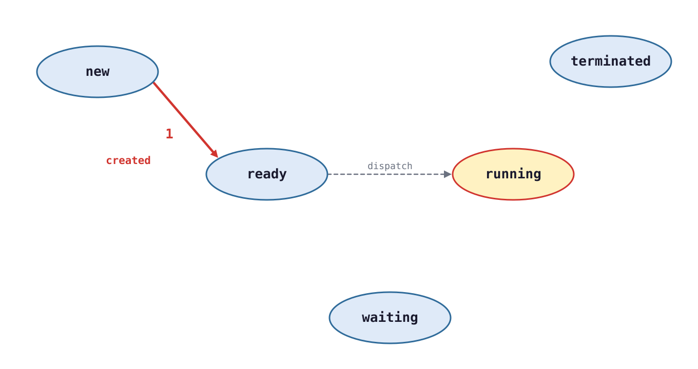</p> --- ### scheduling | **when?** 2. thread **yields** CPU **voluntarily** <p>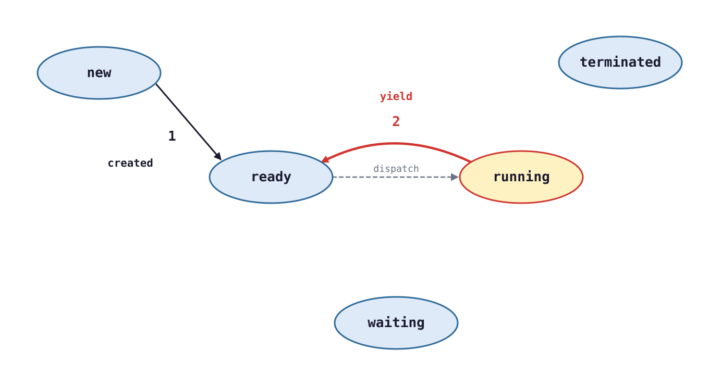</p> --- ### scheduling | **when?** 3. **running → waiting** <br> [_e.g._ blocks on I/O, lock, condition variable] <p>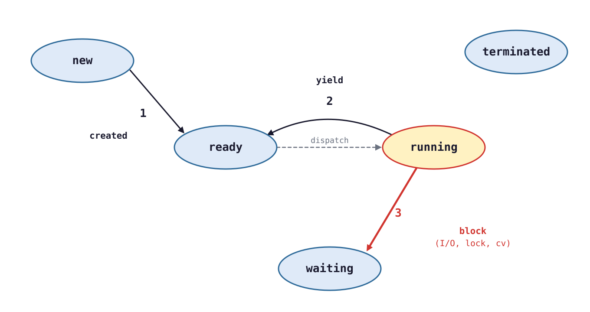</p> --- ### scheduling | **when?** 4. **running → ready** <br> [_e.g._ timer interrupt, quantum expires] <p>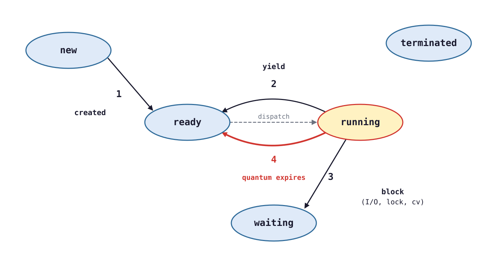</p> --- ### scheduling | **when?** 5. **waiting → ready** <br> [_e.g._ I/O done, lock available, cv signalled] <p>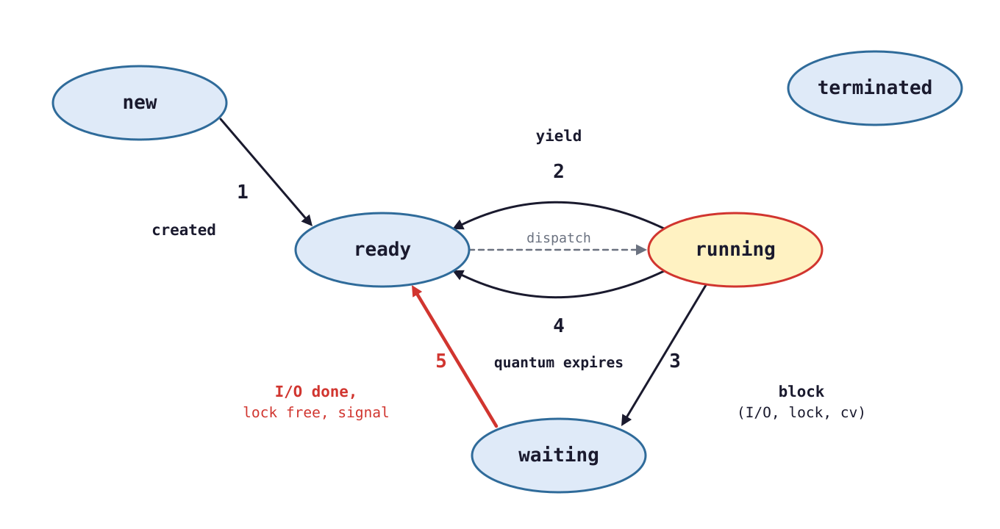</p> --- ### scheduling | **when?** 6. thread **terminates** <br> <p>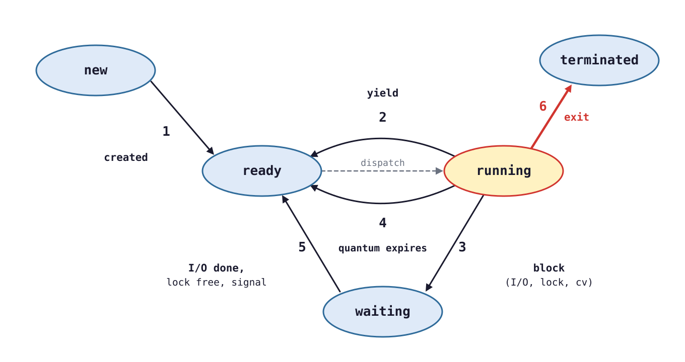</p> --- ### scheduling | **preemptive vs non-preemptive** | kind | decisions at | why | |---|---|---| | **non-preemptive** | 1, 2, 3, 6 | running thread **gives up** CPU | --- ### scheduling | **preemptive vs non-preemptive** | kind | decisions at | why | |---|---|---| | **non-preemptive** | 1, 2, 3, 6 | running thread **gives up** CPU | | **preemptive** | all six | also when **another** thread ready | || --- ### scheduling | **preemptive vs non-preemptive** | kind | decisions at | why | |---|---|---| | **non-preemptive** | 1, 2, 3, 6 | running thread **gives up** CPU | | **preemptive** | all six | also when **another** thread ready <br> or **timer fires** | || --- ### scheduling | **preemptive vs non-preemptive** <div class="multicolumn" style="display: grid; grid-template-columns: 40% 60%; gap: 20px; align-items: center;"> <div> <p>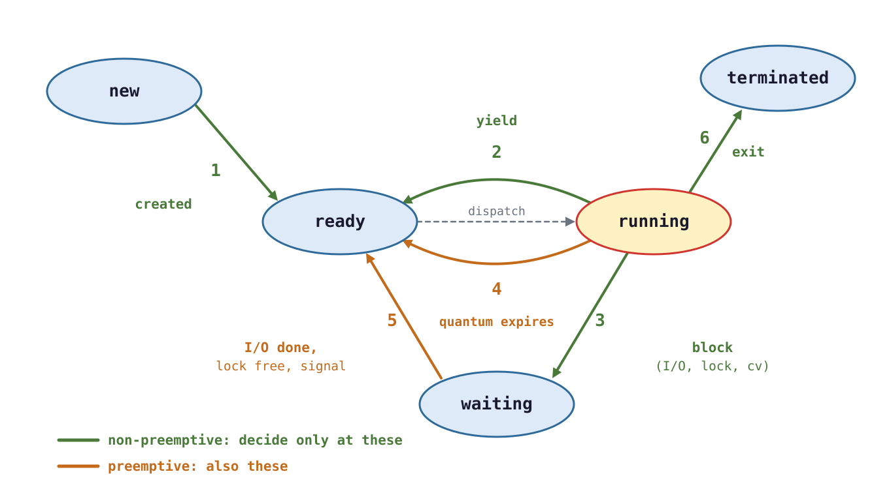</p> </div> <div> | term | meaning | |---|---| | **preempted** | interrupt moves thread <br> <scb>running</scb> → <scb>ready</scb> | </div> </div> --- ### scheduling | **preemptive vs non-preemptive** <div class="multicolumn" style="display: grid; grid-template-columns: 40% 60%; gap: 20px; align-items: center;"> <div> </div> <div> | term | meaning | |---|---| | **preempted** | interrupt moves thread <br> <scb>running</scb> → <scb>ready</scb> | | **non-preemptive** | thread runs until it **chooses** to stop | || </div> </div> --- ### scheduling | **goals** --- <scb>M</scb> threads, <scb>N</scb> cores --- <scb>M</scb> threads, <scb>N</scb> cores which <scb>N</scb> should run **now**? --- decisions made on: - syscalls - exceptions - interrupts --- what should a scheduler **maximize**? --- what should a scheduler **maximize**? what should it **minimize**? --- scheduler judged by **<span style="background-color: darkred; color: white;"> five criteria </span>** --- ### scheduling | **criteria** | criterion | definition | maximize/minimize?| |---|---|---| | **CPU utilization** | % of time CPU runs a thread | | --- ### scheduling | **criteria** | criterion | definition | maximize/minimize? | |---|---|---| | **CPU utilization** | % of time CPU runs a thread | **<span style="background-color: green; color: white;"> maximize </span>**| --- ### scheduling | **criteria** | criterion | definition | maximize/minimize? | |---|---|---| | **CPU utilization** | % of time CPU runs a thread | **<span style="background-color: green; color: white;"> maximize </span>**| | **waiting time** | time spent in **runqueue** | | --- ### scheduling | **criteria** | criterion | definition | maximize/minimize? | |---|---|---| | **CPU utilization** | % of time CPU runs a thread | **<span style="background-color: green; color: white;"> maximize </span>**| | **waiting time** | time spent in **runqueue** | **<span style="background-color: darkred; color: white;"> minimize </span>**| --- ### scheduling | **criteria** | criterion | definition | maximize/minimize? | |---|---|---| | **CPU utilization** | % of time CPU runs a thread | **<span style="background-color: green; color: white;"> maximize </span>**| | **waiting time** | time spent in **runqueue** | **<span style="background-color: darkred; color: white;"> minimize </span>**| | **response time** | from **wakeup** [unblock] <br> until it can do I/O || --- ### scheduling | **criteria** | criterion | definition | maximize/minimize? | |---|---|---| | **CPU utilization** | % of time CPU runs a thread | **<span style="background-color: green; color: white;"> maximize </span>**| | **waiting time** | time spent in **runqueue** | **<span style="background-color: darkred; color: white;"> minimize </span>**| | **response time** | from **wakeup** [unblock] <br> until it can do I/O | **<span style="background-color: darkred; color: white;"> minimize </span>**| --- ### scheduling | **criteria** | criterion | definition | maximize/minimize? | |---|---|---| | **CPU utilization** | % of time CPU runs a thread | **<span style="background-color: green; color: white;"> maximize </span>**| | **waiting time** | time spent in **runqueue** | **<span style="background-color: darkred; color: white;"> minimize </span>**| | **response time** | from **wakeup** [unblock] <br> until it can do I/O | **<span style="background-color: darkred; color: white;"> minimize </span>**| | **fairness** | threads treated **comparably**? | | --- ### scheduling | **criteria** | criterion | definition | maximize/minimize? | |---|---|---| | **CPU utilization** | % of time CPU runs a thread | **<span style="background-color: green; color: white;"> maximize </span>**| | **waiting time** | time spent in **runqueue** | **<span style="background-color: darkred; color: white;"> minimize </span>**| | **response time** | from **wakeup** [unblock] <br> until it can do I/O | **<span style="background-color: darkred; color: white;"> minimize </span>**| | **fairness** | threads treated **comparably**? | **<span style="background-color: green; color: white;"> maximize </span>**| --- ### scheduling | **criteria** | criterion | definition | maximize/minimize? | |---|---|---| | **CPU utilization** | % of time CPU runs a thread | **<span style="background-color: green; color: white;"> maximize </span>**| | **waiting time** | time spent in **runqueue** | **<span style="background-color: darkred; color: white;"> minimize </span>**| | **response time** | from **wakeup** [unblock] <br> until it can do I/O | **<span style="background-color: darkred; color: white;"> minimize </span>**| | **fairness** | threads treated **comparably**? | **<span style="background-color: green; color: white;"> maximize </span>**| | **starvation** | **unbounded** wait <br> → for **every** thread? | | || --- ### scheduling | **criteria** | criterion | definition | maximize/minimize? | |---|---|---| | **CPU utilization** | % of time CPU runs a thread | **<span style="background-color: green; color: white;"> maximize </span>**| | **waiting time** | time spent in **runqueue** | **<span style="background-color: darkred; color: white;"> minimize </span>**| | **response time** | from **wakeup** [unblock] <br> until it can do I/O | **<span style="background-color: darkred; color: white;"> minimize </span>**| | **fairness** | threads treated **comparably**? | **<span style="background-color: green; color: white;"> maximize </span>**| | **starvation** | **unbounded** wait <br> → for every thread? | **<span style="background-color: darkred; color: white;"> avoid! </span>**| || --- **tradeoffs** → can't have them all! --- can **applications** tell us what to optimize? --- <!-- .slide: data-background-color="white" --> consider the following mix of applications... |||| |:----:|:----:|:----:| |<p>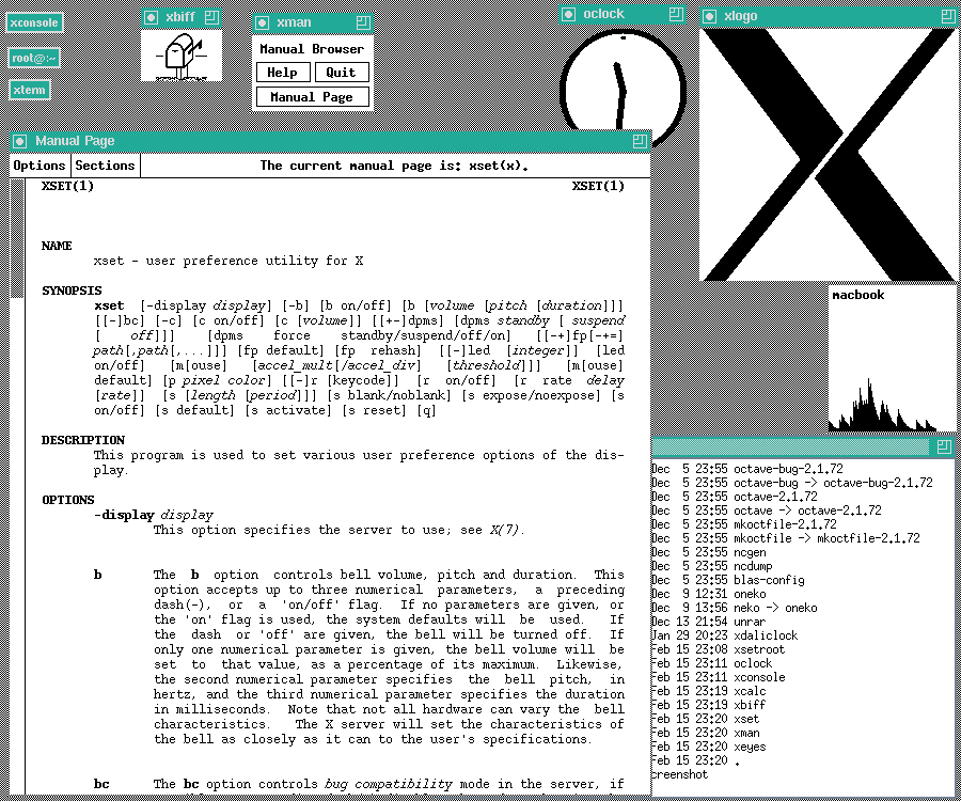</p> <br> X window desktop system | vs | <br> Bitcoin miner| || --- ### workloads | **desktop** [X] wait for keyboard/mouse → compute **quickly** → draw <p>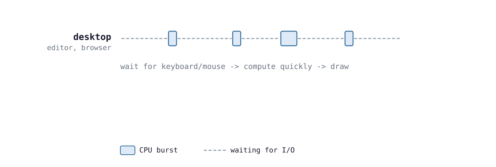</p> --- ### workloads | **desktop** [X] vs **batch** [bitcoin] compute... compute... compute <p>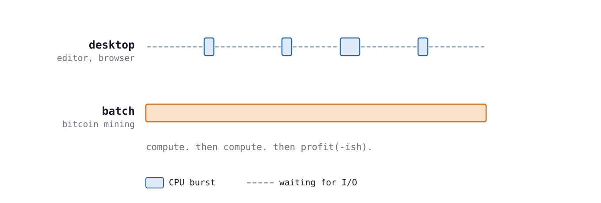</p> --- ### workloads | **desktop** [X] vs **batch** [bitcoin] different patterns → **different goals** <p>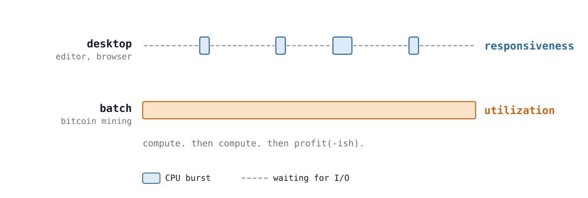</p> --- now, let's look at a different application mix... --- <!-- .slide: data-background-color="white" --> now, let's look at a different application mix... |||| |:----:|:----:|:----:| | <br> web server/proxy | || | <ul><li>wait for net request</li><li>serve static html</li><li>pass dynamic request → servers</li></ul> ||| || --- <!-- .slide: data-background-color="white" --> now, let's look at a different application mix... |||| |:----:|:----:|:----:| | <br> web server/proxy | <br> app server | | | <ul><li>wait for net request</li><li>serve static html</li><li>pass dynamic request → servers</li></ul> | <ul><li>image processing</li><li>request processing</li><li>business logic</li></ul> | | || --- <!-- .slide: data-background-color="white" --> now, let's look at a different application mix... |||| |:----:|:----:|:----:| | <br> web server/proxy | <br> app server | <br> database | | <ul><li>wait for net request</li><li>serve static html</li><li>pass dynamic request → servers</li></ul> | <ul><li>image processing</li><li>request processing</li><li>business logic</li></ul> | <ul><li>wait for sql</li><li>execute sql</li><li>interact with SSD</li></ul> | || --- ### workloads | **servers** <p>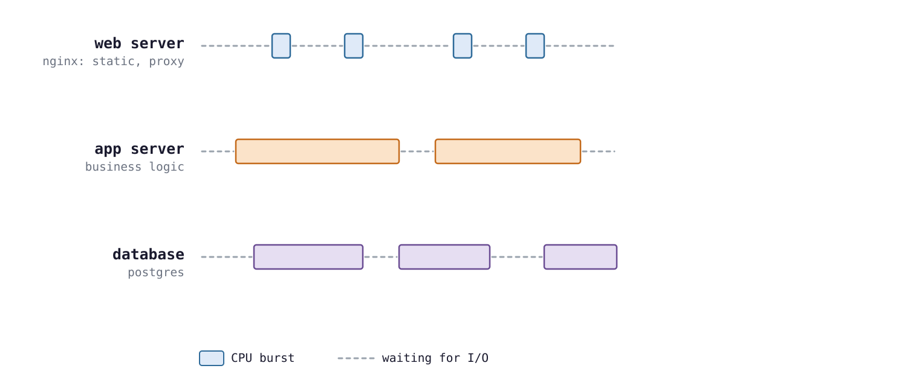</p> --- ### workloads | **servers** each tier → a different **pattern** <p>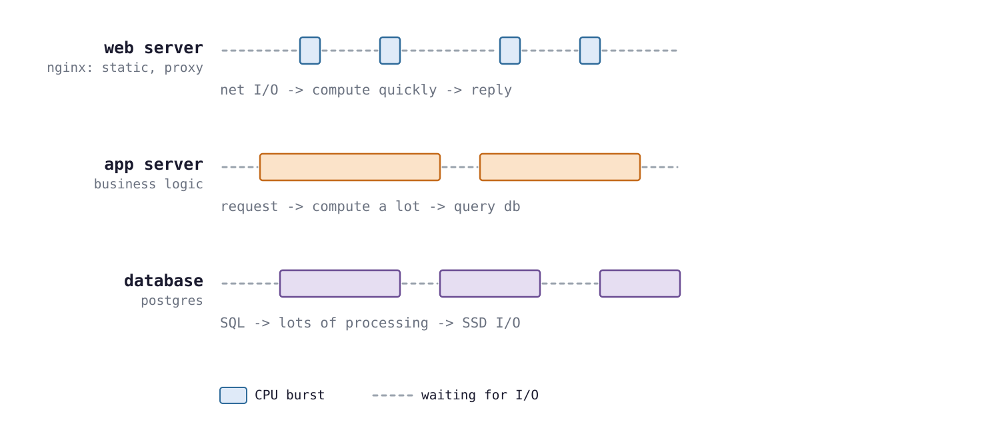</p> --- ### workloads | **servers** ...and a different **goal** <p>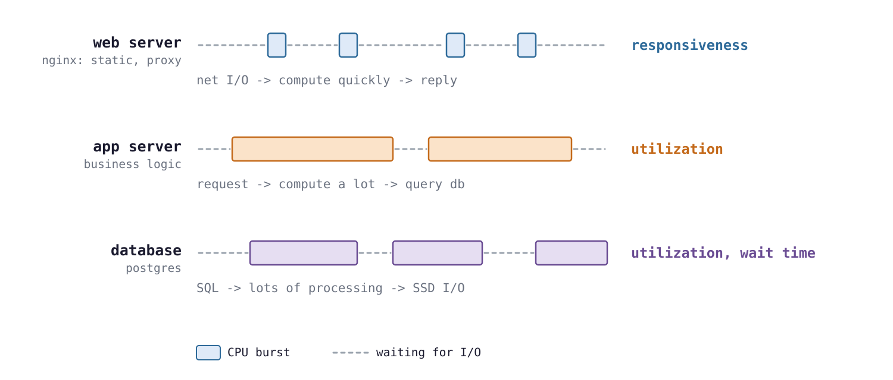</p> --- ### workloads | **goals** | workload | examples | goal | | --- | --- | --- | | **I/O-bound** | desktop, web server | **responsiveness** | --- ### workloads | **goals** | workload | examples | goal | | --- | --- | --- | | **I/O-bound** | desktop, web server | **responsiveness** | | **CPU-bound** | batch, app server | **utilization** | --- ### workloads | **goals** | workload | examples | goal | | --- | --- | --- | | **I/O-bound** | desktop, web server | **responsiveness** | | **CPU-bound** | batch, app server | **utilization** | | **mixed** | database | **utilization** <br> **waiting time** | || --- **one** system runs **all** of these... <center><div class="center" data-id="box" style="height: 75px; width: 500px; background: orange;"> ...at the <b>same time</b>! </div></center> --- ### first-come, first-served | **FCFS** --- ### FCFS - one of **simplest** policies --- ### FCFS - one of **simplest** policies - run threads in **arrival** order --- ### FCFS - one of **simplest** policies - run threads in **arrival** order - **non-preemptive** --- ### example | FCFS --- ### example | FCFS | process | burst time* | |---|---| | <scb>$P_1$</scb> | <scb>24</scb> | <br> <br> [* amount of time it _wants_ to execute, before blocking] --- ### example | FCFS | process | burst time | |---|---| | <scb>$P_1$</scb> | <scb>24</scb> | | <scb>$P_2$</scb> | <scb>3</scb> | | <scb>$P_3$</scb> | <scb>3</scb> | || --- ### example | FCFS arrive: <scb>$P_1$</scb>, <scb>$P_2$</scb>, <scb>$P_3$</scb> <p>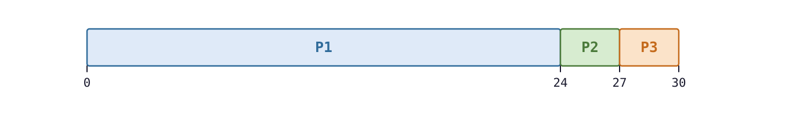</p> --- ### example | FCFS arrive: <scb>$P_1$</scb>, <scb>$P_2$</scb>, <scb>$P_3$</scb> <p>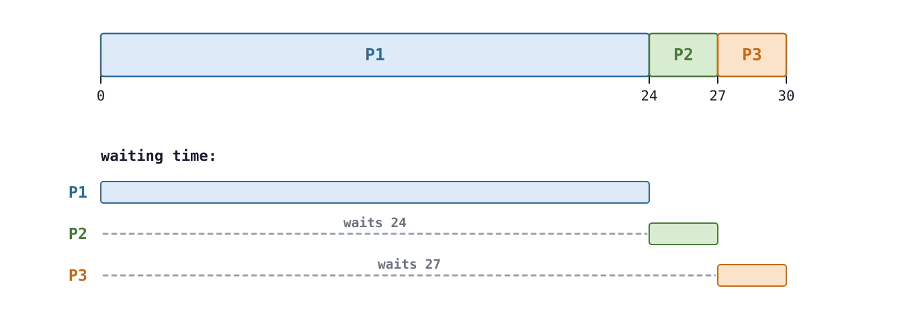</p> --- ### example | FCFS arrive: <scb>$P_1$</scb>, <scb>$P_2$</scb>, <scb>$P_3$</scb> average wait → $\frac{0 + 24 + 27}{3} = \mathbf{17}$ --- ### example | FCFS arrive: <scb>$P_2$</scb>, <scb>$P_3$</scb>, <scb>$P_1$</scb> <p>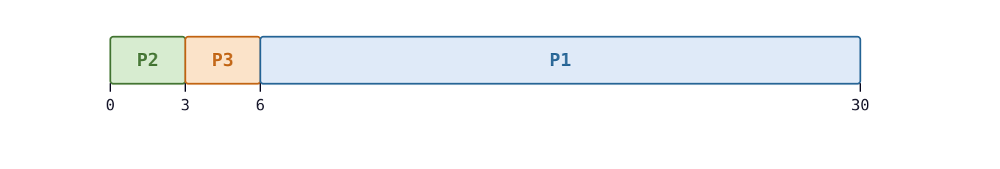</p> --- ### example | FCFS arrive: <scb>$P_2$</scb>, <scb>$P_3$</scb>, <scb>$P_1$</scb> <p>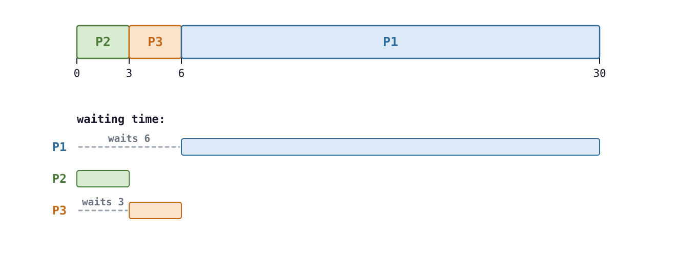</p> --- ### example | FCFS arrive: <scb>$P_2$</scb>, <scb>$P_3$</scb>, <scb>$P_1$</scb> average wait → $\frac{6 + 0 + 3}{3} = \mathbf{3}$ --- ### FCFS | **order matters!** --- ### FCFS | **order matters!** in a **non-preemptive** system --- ### FCFS | **order matters!** in a **non-preemptive** system same jobs, different order | arrival order | average wait | |---|---| | <scb>$P_1$</scb>, <scb>$P_2$</scb>, <scb>$P_3$</scb> | <scb>17</scb> | | <scb>$P_2$</scb>, <scb>$P_3$</scb>, <scb>$P_1$</scb> | <scb>3</scb> | || --- ### FCFS | **convoy effect** - **short** processes stuck behind a **long** one --- ### FCFS | **convoy effect** - **short** processes stuck behind a **long** one - _e.g._ line of cars behind a slow truck --- ### FCFS | **cons** 1. **starvation**? --- ### FCFS | **cons** 1. **starvation**? everyone runs **eventually**... --- ### FCFS | **cons** 1. **starvation**? everyone runs **eventually**... ...unless a thread **never** finishes! - infinite loop - nobody else runs --- ### FCFS | **cons** 2. **responsiveness**? --- ### FCFS | **cons** 2. **responsiveness**? **terrible**! --- ### FCFS | **cons** 2. **responsiveness**? **terrible**! keystroke waits behind **every** long burst --- so, why use FCFS at all? --- ### FCFS | **pros** - minimizes **overheads** - context switches are fewer in number - if preepmtions are expensive → use FCFS --- so, how do we "_fix_" issues with FCFS? --- so, how do we "_fix_" issues with FCFS? what if we add → **preemption**? --- ### round robin | **RR** --- ### round robin - timesharing → **"fair"** share of CPU --- ### round robin - timesharing → **"fair"** share of CPU - **one** thread cannot monopolize CPU --- ### round robin - timesharing → **"fair"** share of CPU - **one** thread cannot monopolize CPU - RR → FCFS + **preemption** --- ### round robin | **mechanism** each thread: ||| |----|----| | runs for one **quantum** | timeslice| --- ### round robin | **mechanism** each thread: ||| |----|----| | runs for one **quantum** | timeslice| | then **preempted** | back of runqueue | || --- ### round robin | **mechanism** <div class="multicolumn" style="display: grid; grid-template-columns: 50% 50%; gap: 20px; align-items: center;"> <div> ||| |----|----| | runs for one **quantum** | timeslice| | then **preempted** | back of runqueue | || </div> <div> needs **timer interrupt**: 1. measure quantum 2. preempt </div> </div> --- ### round robin | **fairness** - $T$ → number of threads - $Q$ → quantum --- ### round robin - $T$ → number of threads - $Q$ → quantum <p>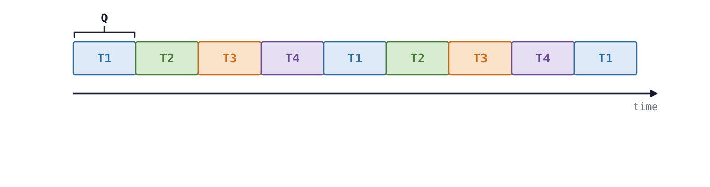</p> --- ### round robin | **fairness** <div class="multicolumn" style="display: grid; grid-template-columns: 50% 50%; gap: 20px; align-items: center;"> <div> <p>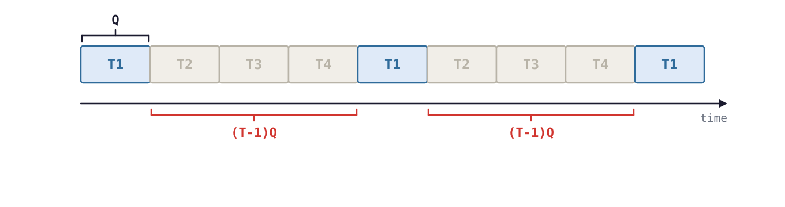</p> </div> <div> - each thread → $\frac{1}{T}$ of CPU <br> in chunks of $Q$ - **no** thread waits more than $(T-1)Q$ between quanta </div> </div> --- ### round robin | **size of Q?** | quantum | result | details | |---|---|---| | $Q \rightarrow \infty$ | FCFS! | no preepmtions | --- ### round robin | **size of Q?** | quantum | result | details | |---|---|---| | $Q \rightarrow \infty$ | FCFS! |no preepmtions | | $Q \rightarrow 0$ | possible? | | --- ### round robin | **size of Q?** | quantum | result | details | |---|---|---| | $Q \rightarrow \infty$ | FCFS! |no preepmtions | | $Q \rightarrow 0$ | possible? | **all** time spent in dispatch overhead | --- ### round robin | **size of Q?** | quantum | result | details | |---|---|---| | $Q \rightarrow \infty$ | FCFS! | no preepmtions | | $Q \rightarrow 0$ | possible? | **all** time spent in dispatch overhead | | **small** $Q$ | better **fairness**, **responsiveness** | more context switches| --- ### round robin | **size of Q?** | quantum | result | details | |---|---|---| | $Q \rightarrow \infty$ | FCFS! | no preepmtions | | $Q \rightarrow 0$ | possible? | **all** time spent in dispatch overhead | | **small** $Q$ | better **fairness**, **responsiveness** |more context switches | | **large** $Q$ | better **throughput** | fewer context switches | || --- let's look at <scb>xv6</scb> | scheduler loop [<scb>proc.c</scb>] --- ### <scb>xv6</scb> | <scb>scheduler()</scb> ```C void scheduler(void) { struct proc *p; struct cpu *c = mycpu(); c->proc = 0; for(;;){ // Enable interrupts on this processor. sti(); // Loop over process table looking for process to run. acquire(&ptable.lock); for(p = ptable.proc; p < &ptable.proc[NPROC]; p++){ if(p->state != RUNNABLE) continue; // Switch to chosen process. It is the process's job // to release ptable.lock and then reacquire it // before jumping back to us. c->proc = p; switchuvm(p); p->state = RUNNING; swtch(&(c->scheduler), p->context); switchkvm(); // Process is done running for now. // It should have changed its p->state before coming back. c->proc = 0; } release(&ptable.lock); } } ``` --- ### <scb>xv6</scb> | <scb>scheduler()</scb> ```C [8|13|14|15-16|21-23|25|6] void scheduler(void) { struct proc *p; struct cpu *c = mycpu(); c->proc = 0; for(;;){ // Enable interrupts on this processor. sti(); // Loop over process table looking for process to run. acquire(&ptable.lock); for(p = ptable.proc; p < &ptable.proc[NPROC]; p++){ if(p->state != RUNNABLE) continue; // Switch to chosen process. It is the process's job // to release ptable.lock and then reacquire it // before jumping back to us. c->proc = p; switchuvm(p); p->state = RUNNING; swtch(&(c->scheduler), p->context); switchkvm(); // Process is done running for now. // It should have changed its p->state before coming back. c->proc = 0; } release(&ptable.lock); } } ``` --- ### <scb>xv6</scb> | <scb>scheduler()</scb> ```C void scheduler(void) { struct proc *p; struct cpu *c = mycpu(); c->proc = 0; for(;;){ // Enable interrupts on this processor. sti(); // Loop over process table looking for process to run. acquire(&ptable.lock); for(p = ptable.proc; p < &ptable.proc[NPROC]; p++){ if(p->state != RUNNABLE) continue; // Switch to chosen process. It is the process's job // to release ptable.lock and then reacquire it // before jumping back to us. c->proc = p; switchuvm(p); p->state = RUNNING; swtch(&(c->scheduler), p->context); switchkvm(); // Process is done running for now. // It should have changed its p->state before coming back. c->proc = 0; } release(&ptable.lock); } } ``` --- ### <scb>xv6</scb> | <scb>scheduler()</scb> --- ### <scb>xv6</scb> | <scb>scheduler()</scb> - walks <scb>ptable</scb> **in order** - runs next <scb>RUNNABLE</scb> one --- ### <scb>xv6</scb> | <scb>scheduler()</scb> - walks <scb>ptable</scb> **in order** - runs next <scb>RUNNABLE</scb> one - quantum → one **timer tick** - then <scb>yield()</scb> --- ### <scb>xv6</scb> | <scb>scheduler()</scb> - walks <scb>ptable</scb> **in order** - runs next <scb>RUNNABLE</scb> one - quantum → one **timer tick** - then <scb>yield()</scb> <br> <br> <center><div class="center" data-id="box" style="height: 75px; width: 600px; background: orange;"> <b>xv6 is round robin!</b> </div></center> --- ### Linux | <scb>SCHED_RR</scb> ``` $ cat /proc/sys/kernel/sched_rr_timeslice_ms 100 ``` Linux round robin → **<scb>100</scb> ms** quantum [default] --- ### example | round robin --- ### example | RR, <scb>Q = 3</scb> | process | burst time | |---|---| | <scb>$P_1$</scb> | <scb>6</scb> | | <scb>$P_2$</scb> | <scb>3</scb> | | <scb>$P_3$</scb> | <scb>1</scb> | | <scb>$P_4$</scb> | <scb>7</scb> | || [all arrive at time <scb>0</scb>, in this order] --- ### example | RR, <scb>Q = 3</scb> <scb>$P_1$</scb> runs one quantum → back of queue --- ### example | RR, <scb>Q = 3</scb> <scb>$P_2$</scb> → done [burst <scb>3</scb>] --- ### example | RR, <scb>Q = 3</scb> <scb>$P_3$</scb> → done **early** [burst <scb>1</scb>] --- ### example | RR, <scb>Q = 3</scb> <scb>$P_4$</scb> → one quantum --- ### example | RR, <scb>Q = 3</scb> <scb>$P_1$</scb> again → done --- ### example | RR, <scb>Q = 3</scb> <scb>$P_4$</scb> → only one left... <p>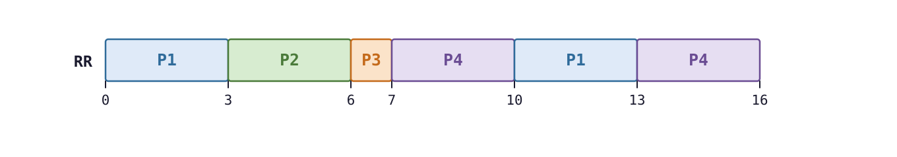</p> --- ### example | RR, <scb>Q = 3</scb> <scb>$P_4$</scb> → done at <scb>17</scb> <p>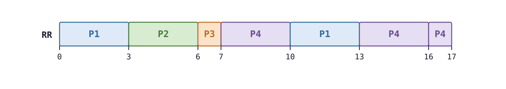</p> --- compared to FCFS? --- ### RR vs FCFS <p>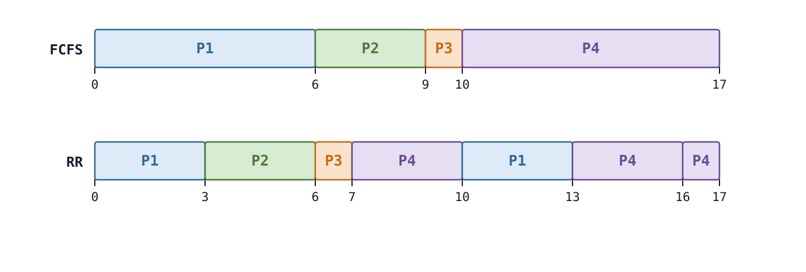</p> --- let's **measure** it → small simulator [<scb>sched_sim.c</scb>] --- ```C /* sched_sim.c: FCFS and round-robin on one CPU (all jobs arrive at time 0) */ #include <stdio.h> #define N 4 void schedule(char *name, int id[], int burst[], int n, int q) /* q == 0 -> FCFS */ { int left[N], wait[N], first[N], end[N], t = 0, done = 0; for (int i = 0; i < n; i++) { left[i] = burst[i]; first[i] = -1; } printf("%s:", name); while (done < n) { for (int i = 0; i < n; i++) { /* runqueue order */ if (left[i] == 0) continue; int run = (q == 0 || left[i] < q) ? left[i] : q; if (first[i] < 0) first[i] = t; printf(" [P%d %d-%d]", id[i], t, t + run); t += run; left[i] -= run; if (left[i] == 0) { end[i] = t; done++; } } } double avg_w = 0, avg_r = 0; printf("\n wait:"); for (int i = 0; i < n; i++) { wait[i] = end[i] - burst[i]; printf(" P%d=%d", id[i], wait[i]); avg_w += wait[i]; avg_r += first[i]; } printf(" avg=%.2f avg first-run=%.2f\n", avg_w / n, avg_r / n); } int main(void) { int ia[] = {1, 2, 3}, a[] = {24, 3, 3}; /* arrive P1, P2, P3 */ int ib[] = {2, 3, 1}, b[] = {3, 3, 24}; /* arrive P2, P3, P1 */ int ic[] = {1, 2, 3, 4}, c[] = {6, 3, 1, 7}; schedule("FCFS", ia, a, 3, 0); schedule("FCFS", ib, b, 3, 0); schedule("FCFS", ic, c, 4, 0); schedule("RR Q=3", ic, c, 4, 3); return 0; } ``` --- ```C [6|12-14|15|16|18-20|26|42-43] /* sched_sim.c: FCFS and round-robin on one CPU (all jobs arrive at time 0) */ #include <stdio.h> #define N 4 void schedule(char *name, int id[], int burst[], int n, int q) /* q == 0 -> FCFS */ { int left[N], wait[N], first[N], end[N], t = 0, done = 0; for (int i = 0; i < n; i++) { left[i] = burst[i]; first[i] = -1; } printf("%s:", name); while (done < n) { for (int i = 0; i < n; i++) { /* runqueue order */ if (left[i] == 0) continue; int run = (q == 0 || left[i] < q) ? left[i] : q; if (first[i] < 0) first[i] = t; printf(" [P%d %d-%d]", id[i], t, t + run); t += run; left[i] -= run; if (left[i] == 0) { end[i] = t; done++; } } } double avg_w = 0, avg_r = 0; printf("\n wait:"); for (int i = 0; i < n; i++) { wait[i] = end[i] - burst[i]; printf(" P%d=%d", id[i], wait[i]); avg_w += wait[i]; avg_r += first[i]; } printf(" avg=%.2f avg first-run=%.2f\n", avg_w / n, avg_r / n); } int main(void) { int ia[] = {1, 2, 3}, a[] = {24, 3, 3}; /* arrive P1, P2, P3 */ int ib[] = {2, 3, 1}, b[] = {3, 3, 24}; /* arrive P2, P3, P1 */ int ic[] = {1, 2, 3, 4}, c[] = {6, 3, 1, 7}; schedule("FCFS", ia, a, 3, 0); schedule("FCFS", ib, b, 3, 0); schedule("FCFS", ic, c, 4, 0); schedule("RR Q=3", ic, c, 4, 3); return 0; } ``` --- ```C /* sched_sim.c: FCFS and round-robin on one CPU (all jobs arrive at time 0) */ #include <stdio.h> #define N 4 void schedule(char *name, int id[], int burst[], int n, int q) /* q == 0 -> FCFS */ { int left[N], wait[N], first[N], end[N], t = 0, done = 0; for (int i = 0; i < n; i++) { left[i] = burst[i]; first[i] = -1; } printf("%s:", name); while (done < n) { for (int i = 0; i < n; i++) { /* runqueue order */ if (left[i] == 0) continue; int run = (q == 0 || left[i] < q) ? left[i] : q; if (first[i] < 0) first[i] = t; printf(" [P%d %d-%d]", id[i], t, t + run); t += run; left[i] -= run; if (left[i] == 0) { end[i] = t; done++; } } } double avg_w = 0, avg_r = 0; printf("\n wait:"); for (int i = 0; i < n; i++) { wait[i] = end[i] - burst[i]; printf(" P%d=%d", id[i], wait[i]); avg_w += wait[i]; avg_r += first[i]; } printf(" avg=%.2f avg first-run=%.2f\n", avg_w / n, avg_r / n); } int main(void) { int ia[] = {1, 2, 3}, a[] = {24, 3, 3}; /* arrive P1, P2, P3 */ int ib[] = {2, 3, 1}, b[] = {3, 3, 24}; /* arrive P2, P3, P1 */ int ic[] = {1, 2, 3, 4}, c[] = {6, 3, 1, 7}; schedule("FCFS", ia, a, 3, 0); schedule("FCFS", ib, b, 3, 0); schedule("FCFS", ic, c, 4, 0); schedule("RR Q=3", ic, c, 4, 3); return 0; } ``` --- which has lower **average wait**? --- ### RR vs FCFS | **output** ``` $ ./sched_sim ... FCFS: [P1 0-6] [P2 6-9] [P3 9-10] [P4 10-17] wait: P1=0 P2=6 P3=9 P4=10 avg=6.25 avg first-run=6.25 RR Q=3: [P1 0-3] [P2 3-6] [P3 6-7] [P4 7-10] [P1 10-13] [P4 13-16] [P4 16-17] wait: P1=7 P2=3 P3=6 P4=10 avg=6.50 avg first-run=4.00 ``` --- ### RR vs FCFS | **output** | metric | FCFS | RR | |---|---|---| | average wait | <scb>6.25</scb> | <scb>6.50</scb> | --- ### RR vs FCFS | **output** | metric | FCFS | RR | |---|---|---| | average wait | <scb>6.25</scb> | <scb>6.50</scb> | | average time to **first** run | <scb>6.25</scb> | **<scb>4.00</scb>** | || --- ### RR vs FCFS | **output** | metric | FCFS | RR | |---|---|---| | average wait | <scb>6.25</scb> | <scb>6.50</scb> | | average time to **first** run | <scb>6.25</scb> | **<scb>4.00</scb>** | <br> <center><div class="center" data-id="box" style="height: 75px; width: 1100px; background: orange;"> <b>responsiveness</b>, not lower waiting time! </div></center> --- ### quantum vs **response time** --- ### quantum vs **response time** smaller quantum → faster response? --- ### quantum vs response time a burst $B = 1.5 Q$ <p>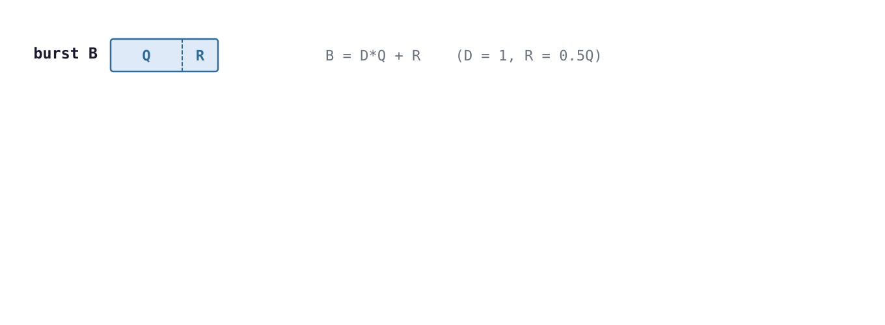</p> --- ### quantum vs response time run $Q$... wait for **everyone else**... run $R$ <p>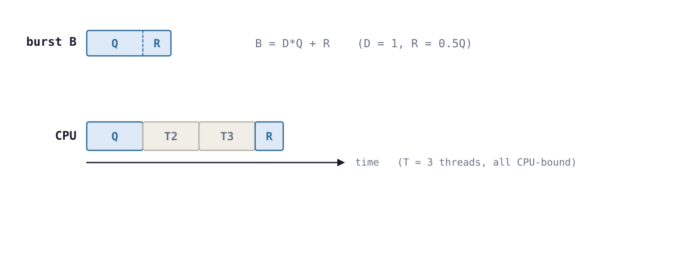</p> --- ### quantum vs response time <p>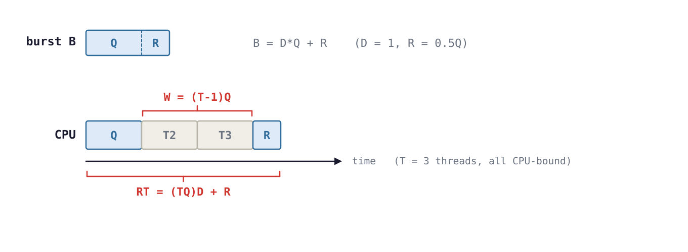</p> --- ### quantum vs response time - $B$ → burst length - $Q$ → quantum - $T$ → number of threads --- ### quantum vs response time | quantity | formula | | --- | --- | | remainder | $R = B \bmod Q$ | --- ### quantum vs response time | quantity | formula | | --- | --- | | remainder | $R = B \bmod Q$ | | division | $D = \lfloor B/Q \rfloor$ | --- ### quantum vs response time | quantity | formula | | --- | --- | | remainder | $R = B \bmod Q$ | | division | $D = \lfloor B/Q \rfloor$ | | response time | $RT^{min} = (TQ) \cdot D + R$ | --- ### quantum vs response time | quantity | formula | | --- | --- | | remainder | $R = B \bmod Q$ | | division | $D = \lfloor B/Q \rfloor$ | | response time | $RT^{min} = (TQ) \cdot D + R$ | | wait time | $W = RT - B$ | || [assumes all $T$ threads are CPU-bound, $R > 0$] --- choice of quantum ($Q$) → significant effects on response times ($RT$) --- ### quantum vs response time | quantum | effect | why | |---|---|---| | $Q$ **small** | **larger** wait time* | more rounds <br> [+ switch overheads] | --- ### quantum vs response time | quantum | effect | why | |---|---|---| | $Q$ **small** | **larger** wait time* | more rounds <br> [+ switch overheads] | | $Q$ **large** | FIFO **convoys** | behaves like **FCFS** | || --- ### quantum vs response time | quantum | effect | why | |---|---|---| | $Q$ **small** | **larger** wait time* | more rounds <br> [+ switch overheads] | | $Q$ **large** | FIFO **convoys** | behaves like **FCFS** | || [* a _slightly_ larger $Q$ → **significant reduction** in response times] --- so far → all threads treated **equally** --- so far → all threads treated **equally** what if some threads are more **important**? --- ### priority **scheduling** --- ### priority scheduling - a **priority** for each thread --- ### priority scheduling - a **priority** for each thread - scheduler picks **highest** priority thread --- ### priority scheduling - a **priority** for each thread - scheduler picks **highest** priority thread - variants: - preemptive - non-preemptive --- ### priority scheduling | **non-preemptive** --- ### priority scheduling | **non-preemptive** - avoids pitfalls of FCFS --- ### priority scheduling | **non-preemptive** - avoids pitfalls of FCFS - low-priority thread **can** still delay high-priority one --- ### priority scheduling | **non-preemptive** - avoids pitfalls of FCFS - low-priority thread **can** still delay high-priority one - until it **blocks**/**yields** --- ### priority scheduling | **preemptive** - low-priority thread **cannot** delay high-priority one - preempted as soon as high-priority thread is **ready** --- ### priority scheduling | **cons** but...what's the **catch**? --- ### priority scheduling | **cons** but...what's the **catch**? ## **starvation**! --- ## **starvation**! low-priority threads → may **never** run --- fix → **aging** --- ### priority scheduling | **aging** adjust priorities **dynamically** --- ### priority scheduling | **aging** adjust priorities **dynamically** | thread | priority | |---|---| | **waiting** a long time | | --- ### priority scheduling | **aging** adjust priorities **dynamically** | thread | priority | |---|---| | **waiting** a long time | **<span style="background-color: green; color: white;"> up </span>** | --- ### priority scheduling | **aging** adjust priorities **dynamically** | thread | priority | |---|---| | **waiting** a long time | **<span style="background-color: green; color: white;"> up </span>** | | **running** a long time | | --- ### priority scheduling | **aging** adjust priorities **dynamically** | thread | priority | |---|---| | **waiting** a long time | **<span style="background-color: green; color: white;"> up </span>** | | **running** a long time | **<span style="background-color: darkred; color: white;"> down </span>** | || --- ### Linux | **priorities** ``` $ chrt -m SCHED_OTHER min/max priority : 0/0 SCHED_FIFO min/max priority : 1/99 SCHED_RR min/max priority : 1/99 SCHED_BATCH min/max priority : 0/0 SCHED_IDLE min/max priority : 0/0 SCHED_DEADLINE min/max priority : 0/0 ``` --- ### Linux | **priorities** | threads | priority | range | |---|---|---| | **real-time** | **fixed** priority | <scb>1</scb>-<scb>99</scb> | --- ### Linux | **priorities** | threads | priority | range | |---|---|---| | **real-time** | **fixed** priority | <scb>1</scb>-<scb>99</scb> | | **normal** | **nice*** value | <scb>-20</scb>..<scb>19</scb> | || [* nice values → next lecture] --- ### Linux | **priorities** | threads | priority | range | |---|---|---| | **real-time** | **fixed** priority | <scb>1</scb>-<scb>99</scb> | | **normal** | **nice*** value | <scb>-20</scb>..<scb>19</scb> | [* nice values → next lecture] see [sched(7)](https://man7.org/linux/man-pages/man7/sched.7.html), [chrt(1)](https://man7.org/linux/man-pages/man1/chrt.1.html) --- what if threads have **different** needs? --- what if threads have **different** needs? say, I/O-bound vs batch processing jobs? --- ### multilevel **queues** --- ### multilevel queues - ready queue → split into **separate** queues --- ### multilevel queues - ready queue → split into **separate** queues - each queue → its **own** policy --- ### multilevel queues | **example** | queue | policy | |---|---| | I/O-bound, interactive | **RR** | --- ### multilevel queues | **example** | queue | policy | |---|---| | I/O-bound, interactive | **RR** | | CPU-bound, background, batch | **FCFS** | || --- but...what about scheduling **between** queues? --- ### multilevel queues | **between queues?** | option | how | catch | |---|---|---| | **fixed priority** | higher queue always first | **starvation** possible | --- ### multilevel queues | **between queues?** | option | how | catch | |---|---|---| | **fixed priority** | higher queue always first | **starvation** possible | | **proportional** | _e.g._ background gets <scb>20</scb>% of CPU | **less** responsive | || --- ### multilevel queues | **Linux** --- ### multilevel queues | **Linux** scheduling **classes** → highest first <p>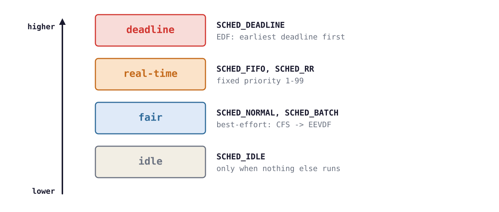</p> --- ### multilevel queues | **Linux** busy higher class... <p>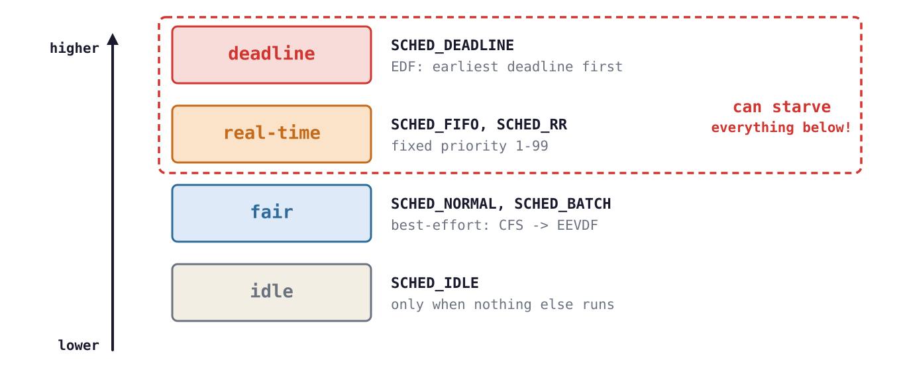</p> --- kernel tries its scheduling classes **in order**... --- kernel tries its scheduling classes **in order**... | order | class | policies | |:---:|---|---| | <scb>1</scb> | **stop** | internal only <br> [_e.g._ migration threads] | --- kernel tries its scheduling classes **in order**... | order | class | policies | |:---:|---|---| | <scb>1</scb> | **stop** | internal only <br> [_e.g._ migration threads] | | <scb>2</scb> | **deadline** | <scb>SCHED_DEADLINE</scb> | --- kernel tries its scheduling classes **in order**... | order | class | policies | |:---:|---|---| | <scb>1</scb> | **stop** | internal only <br> [_e.g._ migration threads] | | <scb>2</scb> | **deadline** | <scb>SCHED_DEADLINE</scb> | | <scb>3</scb> | **real-time** | <scb>SCHED_FIFO</scb>, <scb>SCHED_RR</scb> | --- kernel tries its scheduling classes **in order**... | order | class | policies | |:---:|---|---| | <scb>1</scb> | **stop** | internal only <br> [_e.g._ migration threads] | | <scb>2</scb> | **deadline** | <scb>SCHED_DEADLINE</scb> | | <scb>3</scb> | **real-time** | <scb>SCHED_FIFO</scb>, <scb>SCHED_RR</scb> | | <scb>4</scb> | **fair** | <scb>SCHED_NORMAL</scb>, <scb>SCHED_BATCH</scb>, <scb>SCHED_IDLE</scb> <br> [CFS → EEVDF] | --- kernel tries its scheduling classes **in order**... | order | class | policies | |:---:|---|---| | <scb>1</scb> | **stop** | internal only <br> [_e.g._ migration threads] | | <scb>2</scb> | **deadline** | <scb>SCHED_DEADLINE</scb> | | <scb>3</scb> | **real-time** | <scb>SCHED_FIFO</scb>, <scb>SCHED_RR</scb> | | <scb>4</scb> | **fair** | <scb>SCHED_NORMAL</scb>, <scb>SCHED_BATCH</scb>, <scb>SCHED_IDLE</scb> <br> [CFS → EEVDF] | | <scb>5</scb> | **idle** | per-core idle task [swapper] | || --- ### <sc>Linux</sc> | <scb>__pick_next_task()</scb> ```C for_each_class(class) { // stop → dl → rt → fair → idle p = class->pick_next_task(rq); if (p) return p; // first class with a runnable thread wins } ``` [simplified from [<scb>kernel/sched/core.c</scb>](https://elixir.bootlin.com/linux/latest/source/kernel/sched/core.c)] --- ### <sc>Linux</sc> | <scb>__pick_next_task()</scb> ```C [1|2|3-4|5] for_each_class(class) { // stop → dl → rt → fair → idle p = class->pick_next_task(rq); if (p) return p; // first class with a runnable thread wins } ``` [simplified from [<scb>kernel/sched/core.c</scb>](https://elixir.bootlin.com/linux/latest/source/kernel/sched/core.c)] --- ### <sc>Linux</sc> | <scb>__pick_next_task()</scb> ```C for_each_class(class) { // stop → dl → rt → fair → idle p = class->pick_next_task(rq); if (p) return p; // first class with a runnable thread wins } ``` [simplified from [<scb>kernel/sched/core.c</scb>](https://elixir.bootlin.com/linux/latest/source/kernel/sched/core.c)] --- ### multilevel queues | **Linux** so, which wins? <scb>SCHED_DEADLINE</scb> or <scb>SCHED_FIFO</scb>? --- ### multilevel queues | **Linux** so, which wins? <scb>SCHED_DEADLINE</scb> or <scb>SCHED_FIFO</scb>? <scb>SCHED_DEADLINE</scb> → beats even priority <scb>99</scb> <scb>SCHED_FIFO</scb>! --- ### multilevel queues | **Linux** so, which wins? <scb>SCHED_DEADLINE</scb> or <scb>SCHED_FIFO</scb>? <scb>SCHED_DEADLINE</scb> → beats even priority <scb>99</scb> <scb>SCHED_FIFO</scb>! <br> [but limited to its declared **runtime** budget → can't starve others **forever**] --- ### multilevel queues | **Linux** real-time threads can **starve** normal ones? --- ### multilevel queues | **Linux** real-time threads can **starve** normal ones? ``` $ cat /proc/sys/kernel/sched_rt_runtime_us /proc/sys/kernel/sched_rt_period_us 950000 1000000 ``` real-time capped → **<scb>95</scb>%** of each second --- ### multilevel queues | **Linux** real-time threads can **starve** normal ones? ``` $ cat /proc/sys/kernel/sched_rt_runtime_us /proc/sys/kernel/sched_rt_period_us 950000 1000000 ``` real-time capped → **<scb>95</scb>%** of each second <scb>5</scb>% left for **everyone else**! --- but...how do we know which queue a thread **belongs** to? --- ### multilevel **feedback** queues --- ### multilevel feedback queues thread ↔ queue **mapping**? --- ### multilevel feedback queues thread ↔ queue **mapping**? ||| |----|----| | interactive, I/O-bound threads | **higher** priority queues | --- ### multilevel feedback queues thread ↔ queue **mapping**? ||| |----|----| | interactive, I/O-bound threads | **higher** priority queues | | threads **move** between queues | based on **behaviour** | --- ### multilevel feedback queues thread ↔ queue **mapping**? ||| |----|----| | interactive, I/O-bound threads | **higher** priority queues | | threads **move** between queues | based on **behaviour** | | **aging** | avoids **starvation** | || --- what are the **parameters** we need to think about? --- | parameter | description | | --- | --- | | **queues** | how many? | --- | parameter | description | | --- | --- | | **queues** | how many? | | **policy** | for each queue | --- | parameter | description | | --- | --- | | **queues** | how many? | | **policy** | for each queue | | **promote** | when to move thread **up** | --- | parameter | description | | --- | --- | | **queues** | how many? | | **policy** | for each queue | | **promote** | when to move thread **up** | | **demote** | when to move thread **down** | --- | parameter | description | | --- | --- | | **queues** | how many? | | **policy** | for each queue | | **promote** | when to move thread **up** | | **demote** | when to move thread **down** | | **entry** queue | for new threads | || --- ### example | **three** queues --- ### example | **three** queues three queues <p>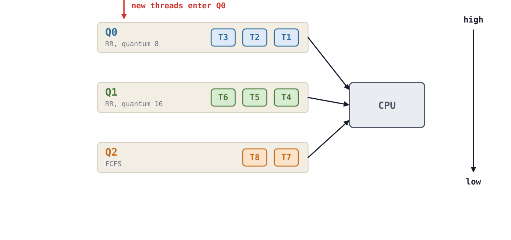</p> --- ### example | **three** queues use **whole** quantum → **demote** <p>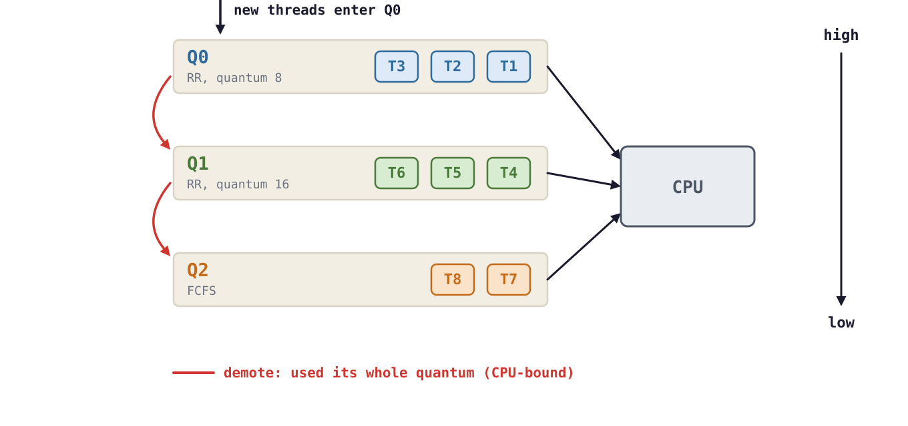</p> --- ### example | **three** queues block on I/O → **promote** <p>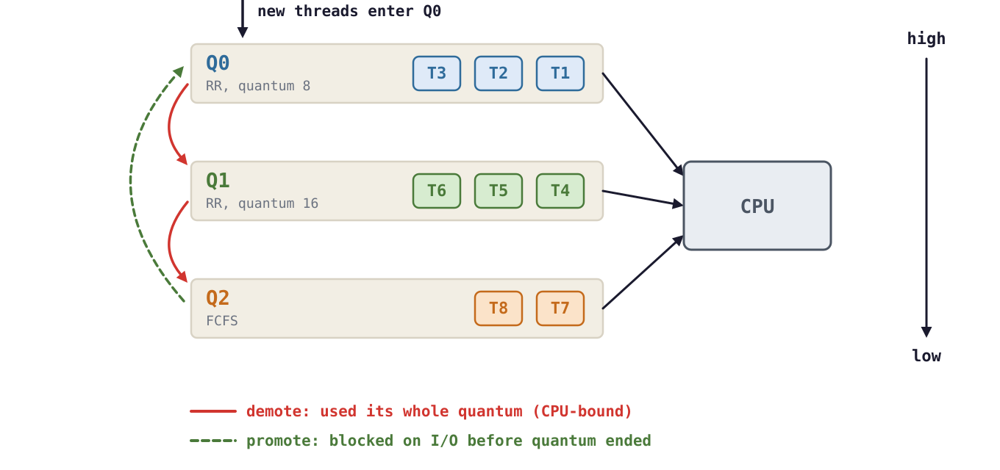</p> --- ### example | **three** queues | **results** | threads | quantum | priority | |---|---|---| | **CPU-bound** | **long** | | --- ### example | **three** queues | **results** | threads | quantum | priority | |---|---|---| | **CPU-bound** | **long** | **<span style="background-color: darkred; color: white;"> low </span>** | --- ### example | **three** queues | **results** | threads | quantum | priority | |---|---|---| | **CPU-bound** | **long** | **<span style="background-color: darkred; color: white;"> low </span>** | | **I/O-bound** | **short** | | --- ### example | **three** queues | **results** | threads | quantum | priority | |---|---|---| | **CPU-bound** | **long** | **<span style="background-color: darkred; color: white;"> low </span>** | | **I/O-bound** | **short** | **<span style="background-color: green; color: white;"> high </span>** | || --- ### example | **three** queues | threads | quantum | priority | |---|---|---| | **CPU-bound** | **long** | **<span style="background-color: darkred; color: white;"> low </span>** | | **I/O-bound** | **short** | **<span style="background-color: green; color: white;"> high </span>** | || <br> <br> <center><div class="center" data-id="box" style="height: 75px; width: 1140px; background: orange;"> behaviour sorts threads <b>automatically!</b> </div></center> --- ### multilevel feedback queues | **starvation?** can a thread in <scb>$Q_2$</scb> starve? --- ### multilevel feedback queues | **starvation?** can a thread in <scb>$Q_2$</scb> starve? ## **yes!** --- ### multilevel feedback queues | **starvation?** - <scb>$Q_0$</scb>/<scb>$Q_1$</scb> always **busy** - <scb>$Q_2$</scb> **never** runs --- ### multilevel feedback queues | **starvation?** - <scb>$Q_0$</scb>/<scb>$Q_1$</scb> always **busy** - <scb>$Q_2$</scb> **never** runs - fix → periodically **boost** everyone to <scb>$Q_0$</scb> --- ### multilevel feedback queues | **starvation?** - <scb>$Q_0$</scb>/<scb>$Q_1$</scb> always **busy** - <scb>$Q_2$</scb> **never** runs - fix → periodically **boost** everyone to <scb>$Q_0$</scb> see [OSTEP, MLFQ](https://pages.cs.wisc.edu/~remzi/OSTEP/cpu-sched-mlfq.pdf) --- ### scheduling | **other policies** - **shortest job first** [<sc>SJF</sc>] - predicts burst lengths [textbook §5.3] --- so far → **one** core...what about **many** cores? --- ### multicore **scheduling** --- ### multicore scheduling - scheduler runs on **each** core --- ### multicore scheduling - scheduler runs on **each** core - "_which thread should **I** run on **my** core?_" --- ### multicore scheduling - scheduler runs on **each** core - "_which thread should **I** run on **my** core?_" - implies the question - "_which **core** should thread run on?_" --- how do we **implement** multicore scheduling? --- ### multicore scheduling | **approaches** | approach | idea | |---|---| | **partitioned** | each thread assigned to **one** core | --- ### multicore scheduling | **approaches** | approach | idea | |---|---| | **partitioned** | each thread assigned to **one** core | | **global** | each runnable thread considered by **every** core | || --- ### multicore scheduling | **partitioned** one runqueue **per core** <p>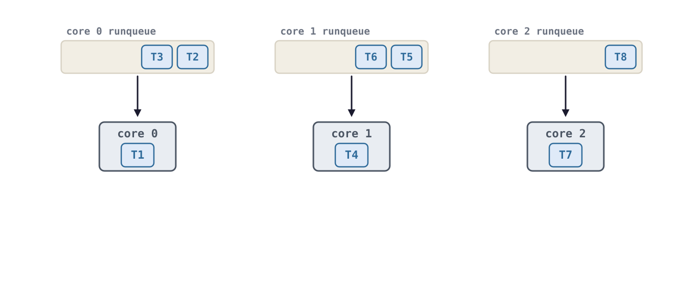</p> --- ### multicore scheduling | **global** **one** runqueue for all cores <p>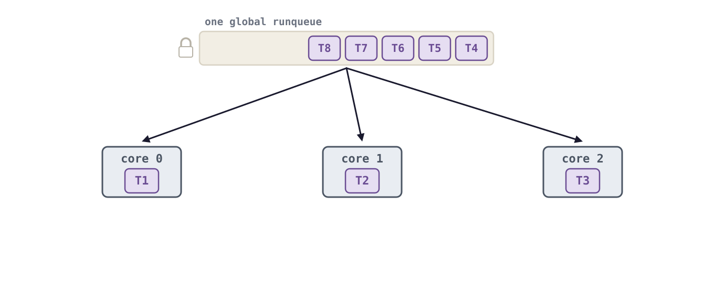</p> --- partitioned or global → **tradeoffs**? --- ### partitioned | **cons** <div class="multicolumn" style="display: grid; grid-template-columns: 50% 50%; gap: 20px; align-items: center;"> <div> <p>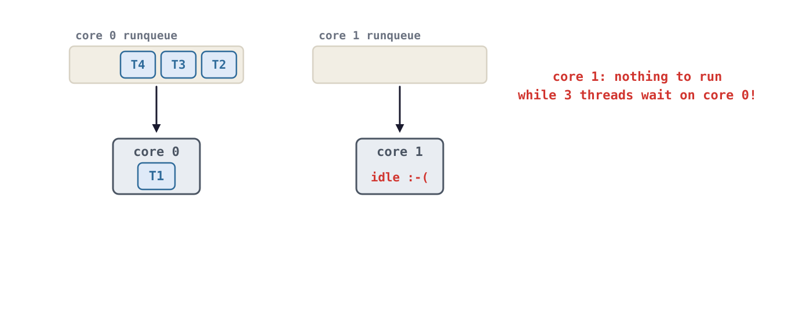</p> </div> <div> - **lower** utilization - core <scb>0</scb> → <scb>4</scb> runnable threads - core <scb>1</scb> → **none** :-( </div> </div> --- ### partitioned | **pros** - **trivial** synchronization --- ### partitioned | **pros** - **trivial** synchronization - per-core runqueues → **no** cross-core locking --- ### partitioned | **pros** - **trivial** synchronization - per-core runqueues → **no** cross-core locking - **cache affinity** <br> → thread stays on **one** core [warm caches] --- ### global | **pros** - **high** utilization --- ### global | **pros** - **high** utilization - idle cores can run **any** runnable thread! --- ### global | **cons** <div class="multicolumn" style="display: grid; grid-template-columns: 50% 50%; gap: 20px; align-items: center;"> <div> <p>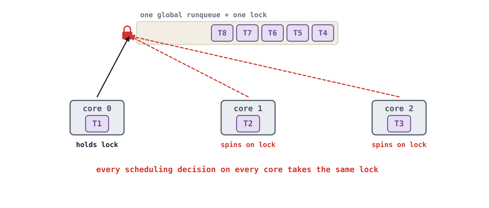</p> </div> <div> - **synchronization** - **one** lock for all cores - **massive** overhead </div> </div> --- ### multicore | **partitioned vs global** | approach | utilization | synchronization | |---|---|---| | **partitioned** | | | --- ### multicore | **partitioned vs global** | approach | utilization | synchronization | |---|---|---| | **partitioned** | **<span style="background-color: darkred; color: white;"> lower </span>** <br> [imbalance] | **<span style="background-color: green; color: white;"> trivial </span>** <br> [per-core] | --- ### multicore | **partitioned vs global** | approach | utilization | synchronization | |---|---|---| | **partitioned** | **<span style="background-color: darkred; color: white;"> lower </span>** <br> [imbalance] | **<span style="background-color: green; color: white;"> trivial </span>** <br> [per-core] | | **global** | | | --- ### multicore | **partitioned vs global** | approach | utilization | synchronization | |---|---|---| | **partitioned** | **<span style="background-color: darkred; color: white;"> lower </span>** <br> [imbalance] | **<span style="background-color: green; color: white;"> trivial </span>** <br> [per-core] | | **global** | **<span style="background-color: green; color: white;"> high </span>** <br> [any core, any thread] | **<span style="background-color: darkred; color: white;"> expensive </span>** <br> [one lock] | || --- subtle issue → thread **migration**... --- subtle issue → thread **migration**... ...is **<span style="background-color: darkred; color: white;"> expensive </span>**! --- ### migration | **caches** thread runs on core → data in **that** core's cache <p>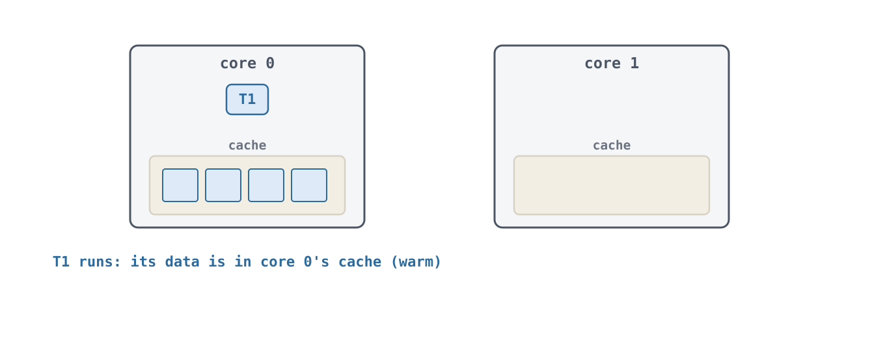</p> --- ### migration | **caches** scheduled on **another** core → data must **move** <p>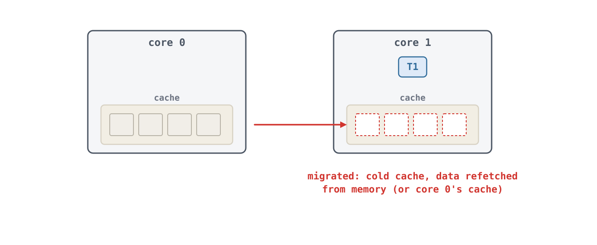</p> --- ### migration | **caches** cost → **refilling** cache [**100s of** <scb>µs</scb> to <scb>ms</scb> → depends on working set] --- so...what do real systems **do**? --- ### multicore | **in practice** --- ### multicore | **in practice** **partitioned** by default --- ### multicore | **in practice** **partitioned** by default but core <scb>N</scb> has **nothing** to run? --- ### multicore | **work stealing** 1. core <scb>1</scb> → **idle** <p>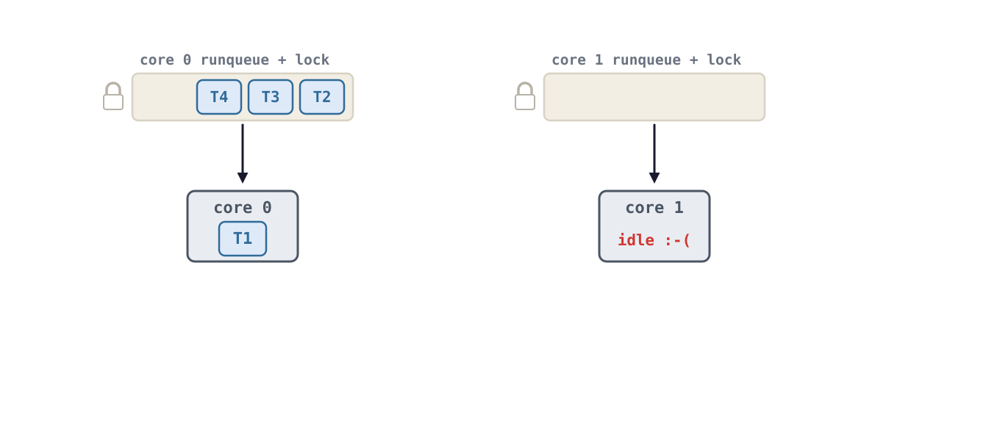</p> --- ### multicore | **work stealing** 2. take core <scb>0</scb>'s runqueue **lock** 3. dequeue a thread <p>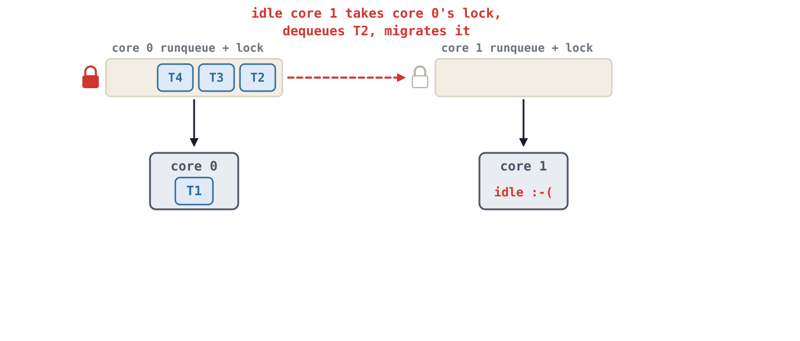</p> --- ### multicore | **work stealing** 4. **migrate** it → run on core <scb>1</scb> <p>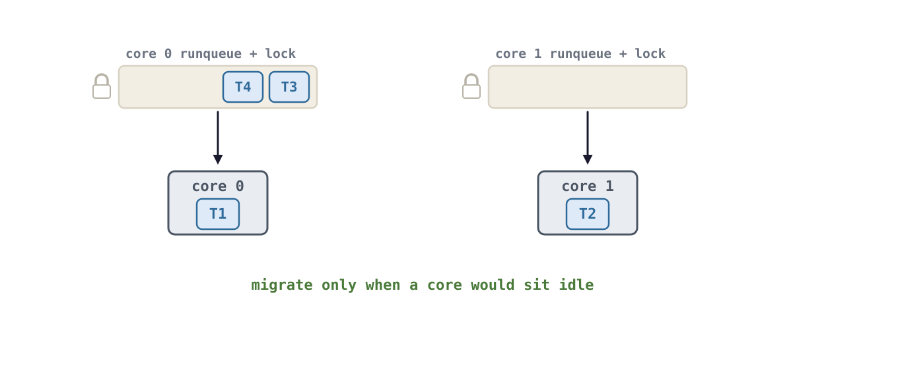</p> --- ### multicore | **in practice** | issue | in practice | | --- | --- | | locks | **per-core** <br> [no single global lock] | --- ### multicore | **in practice** | issue | in practice | | --- | --- | | locks | **per-core** <br> [no single global lock] | | other cores take them | **rarely** | --- ### multicore | **in practice** | issue | in practice | | --- | --- | | locks | **per-core** <br> [no single global lock] | | other cores take them | **rarely** | | migrate | only to keep **utilization** up | --- ### multicore | **in practice** | issue | in practice | | --- | --- | | locks | **per-core** <br> [no single global lock] | | other cores take them | **rarely** | | migrate | only to keep **utilization** up | | two locks at once? | **deadlock**! <br> take them in **one** order | || --- ### multicore | **Linux** - per-core runqueues + **load balancing** --- ### multicore | **Linux** - per-core runqueues + **load balancing** - <scb>double_rq_lock()</scb> → orders two runqueue locks --- what about <scb>xv6</scb>? --- ### <scb>xv6</scb> | **multicore** - **one** <scb>ptable.lock</scb> for all cores --- ### <scb>xv6</scb> | **multicore** - **one** <scb>ptable.lock</scb> for all cores - **global** scheduling! --- ### scheduling | **summary** | topic | key points | | --- | --- | | **goals** | utilization, waiting, response time, fairness | --- ### scheduling | **summary** | topic | key points | | --- | --- | | **goals** | utilization, waiting, response time, fairness | | **policies** | **FCFS**, **RR**, priority, multilevel [feedback] queues | --- ### scheduling | **summary** | topic | key points | | --- | --- | | **goals** | utilization, waiting, response time, fairness | | **policies** | **FCFS**, **RR**, priority, multilevel [feedback] queues | | **every policy** | **trades off** some goals for others | --- ### scheduling | **summary** | topic | key points | | --- | --- | | **goals** | utilization, waiting, response time, fairness | | **policies** | **FCFS**, **RR**, priority, multilevel [feedback] queues | | **every policy** | **trades off** some goals for others | | **multicore** | **partitioned** vs **global** <br> same tradeoffs! | || --- **next topic** → Linux and real-time scheduling